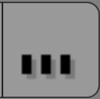

Introduction¶
Sensors are the logic bricks that cause the logic to do anything. Sensors give an output when something happens, e.g. a trigger event such as a collision between two objects, a key pressed on the keyboard, or a timer for a timed event going off. When a sensor is triggered, a positive pulse is sent to all controllers that are linked to it.
The logic blocks for all types of sensor may be constructed and changed using the Logic Editor details of this process are given in the Sensor Editing page.
Common Options¶

Common Sensor options.
All sensors have a set of common buttons, fields and menus. They are organized as follows:
- Triangle button
- Collapses the sensor information to a single line (toggle).
- Sensor type menu
- Specifies the type of the sensor.
- Sensor name
- The name of the sensor. This can be selected by the user. It is used to access sensors with Python; it needs to be unique among the selected objects.
- Pin button
- Display the sensor even when it is not linked to a visible states controller.
- Checkbox button
- Sets active state of the sensor.
- X button
- Deletes the sensor.
Ghi chú
Triggers
If a controller does not get triggered by any connected sensor (regardless of the sensors' state) it will not be activated at all.
A sensor triggers the connected controllers on state change. When the sensor changes its state from negative to positive or positive to negative, the sensor triggers the connected controllers. A sensor triggers a connected controller as well when the sensor changes from deactivation to activation.
The following parameters specify how the sensor triggers connected controllers:
- True level triggering
- If this is set, the connected controllers will be triggered as long as the sensor's state is positive. The sensor will trigger with the delay (see parameter: frequency) of the sensor.
- False level triggering
- If this is set, the connected controllers will be triggered as long as the sensor's state is negative. The sensor will trigger with the delay (see parameter: frequency) of the sensor. 
- Freq
Despite its name "Frequency", this parameter sets the delay between repeated triggers, measured in frames (also known as logic ticks). The default value is 0 and it means no delay. It is only used if at least one of the level triggering parameters are enabled.
Raising the value of freq is a good way for saving performance costs by avoiding to execute controllers or activate actuators more often than necessary.
Examples: (assuming the default frame rate with a frequency of 60 Hz (60 frames per second)).
{kind=link}
{kind=link}
| Freq | Meaning | Frames with trigger | Frames without trigger | Period in frames | Frequency in frames/sec |
|---|---|---|---|---|---|
| 0 | The sensor triggers the next frame. | 1 | 0 | 1 | 60 |
| 1 | The sensor triggers at one frame and waits another one until it triggers again. It results in half speed. | 1 | 1 | 2 | 30 |
| 29 | The sensor triggers at one frame and waits 29 frames until it triggers again. | 1 | 29 | 30 | 2 |
| 59 | The sensor triggers at one frame and waits 59 frames until it triggers again. | 1 | 59 | 30 | 1 |
- Level Button
- Triggers connected controllers when state (of the build-in state machine) changes (for more information see States).
The following parameters specify how the sensor's status gets evaluated:
- Tap Button
- Changes the sensor's state to negative one frame after changing to positive even if the sensor evaluation remains positive. As this is a state change it triggers the connected controllers as well. Only one of Tap or Level can be activated. If the TRUE level triggering is set, the sensor state will consecutive change from True to False until the sensor evaluates False. The FALSE level triggering will be ignored when the Tap parameter is set.
- Invert Button
- This inverts the sensor output. If this is set, the sensor's state will be inverted. This means the sensor's state changes to positive when evaluating False and changes to False when evaluating True. If the Tap parameter is set, the sensor triggers the controller based on the inverted sensor state.